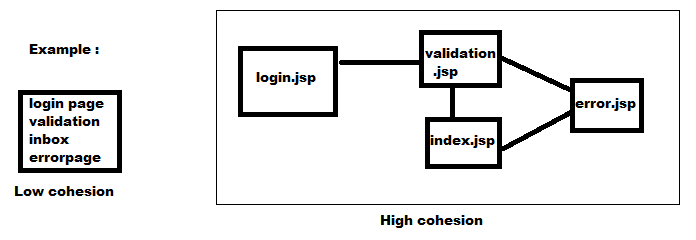

Coupling :
- The degree of dependency between the components is called coupling .
- Dependency between the components should be less as possible .
- Tightly coupling is not a good programing practice, because it has several disadvantages .
- Without effecting remaining components we can not modify any component . Hence enhancement will become difficult .
- It reduces maintainbility of the application .
- It does not promots reusability .
- Loose coupling is always good programing parctice .
Cohesion :
- For every component we have to define a clear well defined functionality, such type of component is said to be follow high cohesion .

- High cohesion is always recommonded. Because it has the following advantages.
- Without effecting remaining components we can modify any components . Hence enhancement will become easy .
- It improves maintainbility of the application .
- It promotes reusability( Whenever validation is required we can reuse the same Validation component everywhere without rewriting again . )
- High cohesion and loose coupling ar good programing practice .